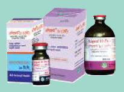

Composition
Each ml injectable solution contains:
Gentamycin Sulphate BP 100 mg.
Indications
For the treatment of Mastitis, Metritis, Haemorrhagic septicemia, Salmonellosis, Enteritis, Respiratory tract and Urinary tract infections.
Dosage & administration
Cattle and Horse: 0.5- 1.25 ml /25kg of body weight in deep intramuscular injection.
Storage
Store in a cool & dry place, protected from light, keep all medicines out of the reach of children.
Pack Size
10x10 ml & 100 ml vial.